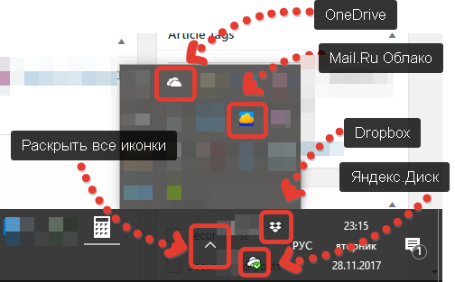
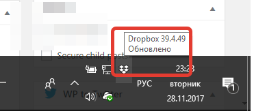
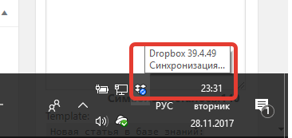
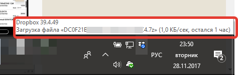
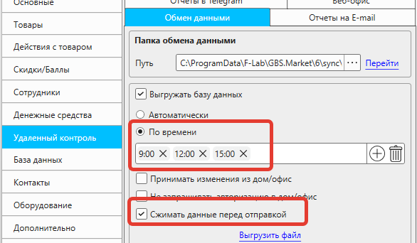
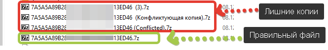
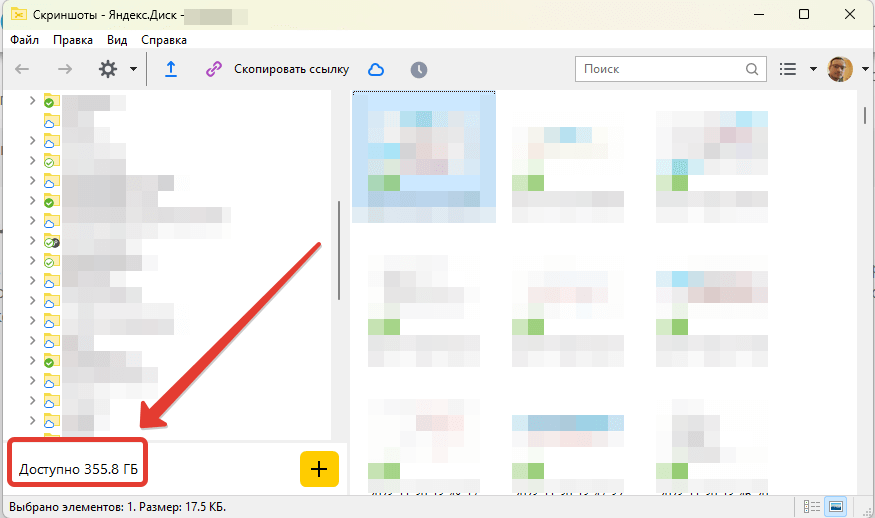

Кассовая программа GBS.Market может использовать облачную синхронизацию для обмена данными между рабочими местами. Например, "облако" может быть использовано для:
- удаленного контроля в режиме "дом\офис"
- перемещения товаров между торговыми точками
- просмотра остатков одной торговой точки в другой
- обменом информацией о покупателях
- хранения резервных копий
В качестве "облака" могут использоваться такие сервисы, как:
Поддерживаемые облачные сервисы:
- Яндекс.Диск
- Mail.ru облако
- Google.Drive
- Dropbox
- и другие
В ряде случае облачная синхронизация может не работать. В этой статье рассмотрим основные причины, по которым может случиться сбой или ошибка обмена данными при использовании "облака"
Полезные материалы
Общие рекомендации
В большинстве случаев для решения проблем с обменом могут помочь общие рекомендации по устранению проблем:
- перезапустите программу на всех устройствах
- перезагрузите все устройства полностью
- проверьте наличие интернета
Если это не поможет, следуйте дальнейшим рекомендациям.
Версии GBS.Market не совпадают
Для корректного обмена данными необходимо, чтобы версии программ на компьютерах, участвующих в синхронизации совпадали.
Проверить версию программы можно с главной формы в меню Справка – О программе.
Если версию не совпадают – необходимо обновить программу так, чтобы версии на всех устройствах были одинаковые.
Программа "облако" не запущена
Обычно "облако" запускается при включении компьютера. Но иногда может случиться, что облачный сервис прекратил работу или не запустился при включении. Убедитесь, что в трее (рядом с часами) отображается значок используемого облачного сервиса.
На скриншоте показано, что запущено сразу несколько облачных сервисов. Важно, чтобы работал именно тот сервис, который вы используете для обмена данными.
Убедитесь, что "облако" работает на всех используемых устройствах.
Т.е. если у вас настроена связка "магазин+дом", то "облако" должно работать на обеих компьютерах.
Данные в "облаке" не синхронизируются
Иногда "облако" может не синхронизировать некоторые файлы. Например. это может случиться из-за низкой скорости или переполненного хранилища.
Статус синхронизации - Обновлено
На скриншоте выше видно, что при наведении на иконку Dropbox появляется подсказка "обновлено". Значит – все данные синхронизированы.
Синхронизация в процессе
Синхронизация занимает очень много времени
На двух скриншотах выше видно, что синхронизация еще не завершена, т.е. не все данные были загружены или выгружены. Если такой статус не меняется – возможно, проблема с интернет-соединением. Необходимо убедиться, что скорости подключения недостаточно для обмена данными.
Важно
Необходимо понимать, что "скорость интернета" имеет два значения: 1. Скорость загрузки (входящая) и 2. Скорость выгрузки (исходящая). Для выгрузки данных важен именно второй параметр.
Некоторые провайдеры мобильного интернета могут предлагать услугу "увеличение скорости", но под увеличение чаще всего попадает только скорость загрузки, а исходящая скорость не изменяется.
Если скорость интернета низкая или пакет месячного трафика небольшой – целесообразно:
- использовать выгрузку по времени
- включить опцию "сжимать данные перед отправкой"
Сделать это можно в настройках: с главной формы откройте в меню Файл – Настройки – Удаленный контроль – Обмен данными
В "облаке" создается много копий файлов
Иногда облачный сервис не может однозначно идентифицировать загруженный файл и вместо замены существующего – создает копию. Например, в "облаке" можно файлы, к которым добавлено "конфликтующая копия", "Conflicted" или цифра в скобках.
Первые три файла – это дубли, которые не нужны для GBS.Market, но их наличие сбивает работу "облака" и GBS.Market.
Необходимо проверить папку, которая используется для обмена данными и удалить из нее лишние копии файлов. Сделать это можно с одного устройства – на других эти файлы должны будут удалиться в процессе синхронизации.
Важно
Будьте предельно внимательны при удалении. Если сомневаетесь, лучше переместите файлы в другое место вместо их удаления.
В облачном хранилище закончилось место
Если вы превысили доступный объем хранилища, то синхронизация, скорее всего, не будет работать. Проверьте, что в вашем "облаке" достаточно свободного места.
Доступный объём в Яндекс.Диске
Например, в Яндекс.Диске доступный объем можно увидеть в окне программы "Диск" в левом нижнем углу.
Некорректно настроена синхронизация
Важно, чтобы на всех устройствах, которые участвуют в обмене, синхронизация была настроена корректно.
- На всех устройствах должен использоваться один и тот же облачный сервис, например, Яндекс.Диск
- Вход в "облако" должен быть выполнен под одной учетной записью. Т.е. после установки "облака" вы должны вводить на всех компьютерах один и тот же логин и пароль. Вход выполняется именно в "облако" и не относится к владельцу лицензии на GBS.Market или указанную при установке электронную почту.
- Для обмена данными должна использоваться одна папка. Если для каждой торговой точки вы создадите отдельную папку – обмен не будет работать.
Отключено сохранение папок локально
Многие облачные сервисы позволяют хранить файлы в режиме "только в облаке", что может быть полезно в ряде случаев. Но для работы обмена данными в кассовой программе GBS.Market необходимо, чтобы все файлы из облака загружались на компьютер.
Важно
Проверьте это на всех устройствах, которые участвуют в синхронизации
На скриншоте выше видно, что три папки имеют разный режим синхронизации.
- Облако – значит, что файлы хранятся только в облаке
- Зеленая галочка на белом фоне – часть файлов внутри этой папки сохраняется локально, часть в облаке
- Белая галочка в зеленом круге – данные из папки сохраняются локально
Для корректной работы синхронизации необходим третий вариант. Если папка, используемая для обмена данными, имеет другой статус, необходимо:
- нажать правой кнопкой мыши на папке
- выбрать "сохранить на компьютере"
В зависимости от используемого "облака" название пунктов может отличаться, но обычно имеет аналогичный смысл.
Очистите кэш данных в "дом/офис"
Если изменения из торговых точек не отображаются в режиме "дом/офис" в ряде случаев может помочь очистка кэша (временных файлов) торговых точек.
Для очистки кэша на компьютере, где программа работает в режиме "дом/офис", необходимо:
- открыть папку с данными по инструкции
- закрыть GBS.Market
- удалить папку Cache в папке с данными
- запустить GBS.Market и проверить работоспособность
Обратитесь в службу поддержки
Если рекомендации, перечисленные в статье, не помогли в решении ситуации, обратитесь в службу поддержки.
Для более оперативного решения вопроса, необходимо:
- описать суть проблемы и действия, которые вы предприняли самостоятельно
- уточнить сервис (облако), используемое для обмена данными
- сообщить тип интернета (мобильной, проводной)
- подготовить логи работы программы за последние 3 дня с каждого из компьютеров, на котором наблюдаются проблемы. О том, как подготовить логи, описано в статье.